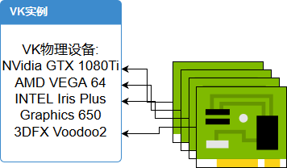

1.3 你!肥肥壮壮绿绿的那个块,快给我滚过来干活!
如你所见,这一章我们会挑选出一个显卡来给我们干活

我们首先需要在app下创建一个physical_device.rs
然后把它添加到mod.rs
use super::super::utils::tools::*;
use ash::version::InstanceV1_0;
use ash::vk;
use ash::{vk_version_major, vk_version_minor, vk_version_patch};
use std::ptr;
这些
pub struct QueueFamilyIndices {
graphics_family: i32,
}
//记录有几个可用的queue family
impl QueueFamilyIndices {
pub fn is_complete(&self) -> bool {
self.graphics_family >= 0
}
}
//检查是不是一个不能用
有些人可能不理解queue是什么意思 (英文直译队列) 假如我有一块GPU 我想让那个GPU渲染一个三角形吧 我会先把渲染三角形的命令交给queue(排队),然后gpu会执行
一个合格的GPU会有很多的queue,分为不同的类型,比如有的负责渲染的(graphic queue)有的填充像素块的(transfer queue) queue family就是每一个类型的queue欢聚一堂,成为一个queue family
pub fn pick_physical_device(instance: &ash::Instance) -> vk::PhysicalDevice {
let physical_devices = unsafe {
//枚举现在在电脑上插着的所有的显卡
instance
.enumerate_physical_devices()
.expect("枚举GPU失败!")
};
println!(
"找到{}个Vulkan支持的设备:",
physical_devices.len()
);
let mut result = None;
for &physical_device in physical_devices.iter() {
//将所有我们找到的显卡检查是不是合适
//现阶段还没有引入扩展所以姑且检查一些就行了
//下面的 is_physical_device_suitable 函数我们还没写
if is_physical_device_suitable(instance, physical_device) {
if result.is_none() {
result = Some(physical_device)
}
}
}
match result {
None => panic!("找不到合适的GPU! 请检查GPU驱动安装"),
Some(physical_device) => physical_device,
}
}
现在我们来写上之前的那个函数
pub fn is_physical_device_suitable(
instance: &ash::Instance,
physical_device: vk::PhysicalDevice,
) -> bool {
//查看这个设备的属性
let device_properties = unsafe { instance.get_physical_device_properties(physical_device) };
//查看支持的特性
let device_features = unsafe { instance.get_physical_device_features(physical_device) };
//获取设备的queue families
let device_queue_families =
unsafe { instance.get_physical_device_queue_family_properties(physical_device) };
//看看显卡类型
let device_type = match device_properties.device_type {
vk::PhysicalDeviceType::CPU => "Cpu",
vk::PhysicalDeviceType::INTEGRATED_GPU => "集成 GPU",
vk::PhysicalDeviceType::DISCRETE_GPU => "独立 GPU",
vk::PhysicalDeviceType::VIRTUAL_GPU => "虚拟 GPU",
vk::PhysicalDeviceType::OTHER => "未知设备",
_ => panic!(),
};
let device_name = vk_to_string(&device_properties.device_name);
println!(
"\t设备名称: {}, id: {}, type: {}",
device_name, device_properties.device_id, device_type
);
//格式a.b.c 比如 10.8.1
//a是major version ,b是minor version,c是patch version
let major_version = vk_version_major!(device_properties.api_version);
let minor_version = vk_version_minor!(device_properties.api_version);
let patch_version = vk_version_patch!(device_properties.api_version);
println!(
"\tAPI版本: {}.{}.{}",
major_version, minor_version, patch_version
);
println!("\t支持的 Queue Family: {}", device_queue_families.len());
println!("\t\tQueue Count | Graphics, Compute, Transfer, Sparse Binding");
for queue_family in device_queue_families.iter() {
//迭代所有设备,看看都支持一些什么东西
let is_graphics_support = if queue_family.queue_flags.contains(vk::QueueFlags::GRAPHICS) {
"支持"
} else {
"不支持"
};
let is_compute_support = if queue_family.queue_flags.contains(vk::QueueFlags::COMPUTE) {
"支持"
} else {
"不支持"
};;
let is_transfer_support = if queue_family.queue_flags.contains(vk::QueueFlags::TRANSFER) {
"支持"
} else {
"不支持"
};;
let is_sparse_support = if queue_family
.queue_flags
.contains(vk::QueueFlags::SPARSE_BINDING)
{
"支持"
} else {
"不支持"
};;
println!(
"\t\t{}\t | {}, {}, {}, {}",
queue_family.queue_count,
is_graphics_support,
is_compute_support,
is_transfer_support,
is_sparse_support
);
}
//看看支不支持集合着色器
println!(
"\t几何着色器: {}",
if device_features.geometry_shader == 1 {
"支持"
} else {
"不支持"
}
);
//这个函数在下面
let indices = find_queue_family(instance, physical_device);
return indices.is_complete();
}
我们需要找到这个物理设备的queue family 之前说过 queue family是一个类型的queue
pub fn find_queue_family(
instance: &ash::Instance,
physical_device: vk::PhysicalDevice,
) -> QueueFamilyIndices {
let queue_families =
unsafe { instance.get_physical_device_queue_family_properties(physical_device) };
let mut queue_family_indices = QueueFamilyIndices {
graphics_family: -1,
};
//下面的代码和白话文似的,没什么好讲的
let mut index = 0;
for queue_family in queue_families.iter() {
if queue_family.queue_count > 0
&& queue_family.queue_flags.contains(vk::QueueFlags::GRAPHICS)
{
queue_family_indices.graphics_family = index;
}
if queue_family_indices.is_complete() {
break;
}
index += 1;
}
queue_family_indices
}
现在 我们选择了合适的显卡,也知道这块显卡支持那些queue family了,现在我们应该让这块显卡加入到我们的实例里面去
打开vki.rs
//最上方
use super::physical_device::*;
//在 pub struct VKI 中加入
pub physical_device: vk::PhysicalDevice,
//在impl里
pub fn new() -> VKI {
let entry = ash::Entry::new().unwrap();
let instance = VKI::create_instance(&entry);
let (debug_report, debug_callback) = setup_debug_callback(&entry, &instance);
//挑块显卡
let physical_device = pick_physical_device(&instance);
return VKI {
entry: entry,
instance: instance,
debug_report: debug_report,
debug_callback: debug_callback,
physical_device: physical_device,
//加入我们创建出来的物理设备
};
}
这样这个显卡就可以正常工作了,我们可以运行一下
可用实例层:
VK_LAYER_NV_optimus
VK_LAYER_VALVE_steam_overlay
VK_LAYER_VALVE_steam_fossilize
VK_LAYER_LUNARG_standard_validation
找到2个Vulkan支持的设备:
设备名称: GeForce GTX 1080, id: 5019, type: 独立 GPU
API版本: 1.1.95
支持的 Queue Family: 2
Queue Count | Graphics, Compute, Transfer, Sparse Binding
16 | 支持, 支持, 支持, 支持
1 | 不支持, 不支持, 支持, 不支持
几何着色器: 支持
设备名称: Intel(R) HD Graphics 530, id: 6427, type: 集成 GPU
API版本: 1.0.38
支持的 Queue Family: 1
Queue Count | Graphics, Compute, Transfer, Sparse Binding
1 | 支持, 支持, 支持, 支持
几何着色器: 支持
如果输出类似的东西,证明你的代码抄的没什么问题.